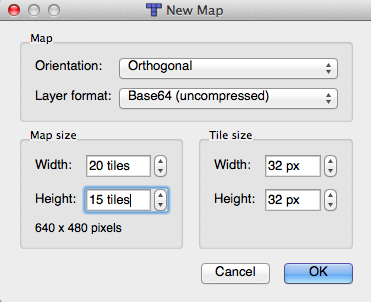
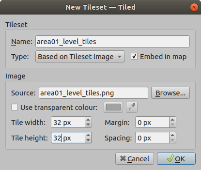
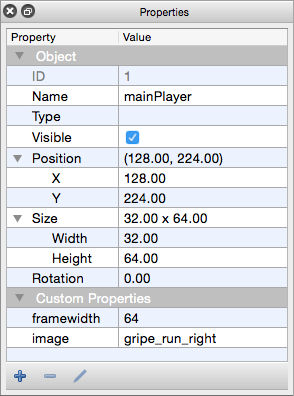
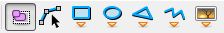
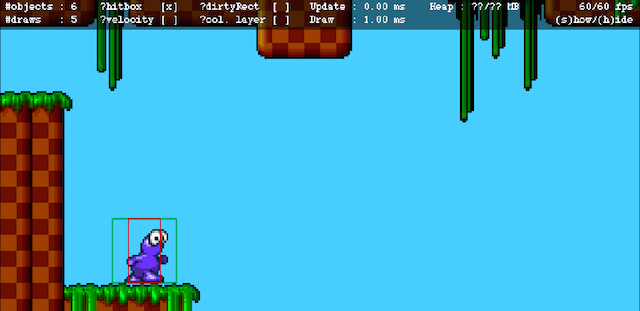
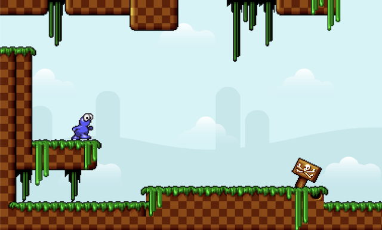
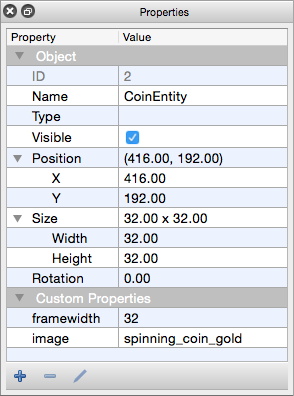
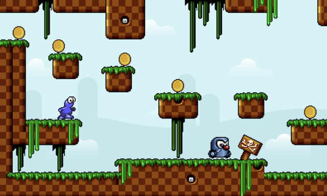
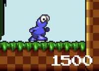
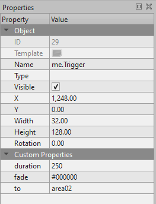

Platformer Tutorial
In this tutorial, we will create a simple platformer. This tutorial will primarily be focused on creating the basic element of a working game using Tiled as the level editor.
Introduction
To work through this tutorial, you need the following:
- The Tiled Map Editor, installed and running (0.9.0 or later)
- The melonJS boilerplate, that we will use as default template project for our tutorial.
-
The tutorial data files, to be uncompressed into the (here above) template data directory, and which contains the following :
- a level tileset
- two backgrounds for parallax layers
- some basic spritesheets
- some audio sfx and music
- a title screen background
- melonJS library 6.0.0 or higher, to be copied under the /lib directory (be sure to download both the minified and plain version, as the latter might potentially be required for debugging purpose)
- The melonJS documentation for more details
Testing/debugging :
If you just want to use the filesystem, the problem is you'll run into "cross-origin request" security errors. With Chrome, you need to use the "--disable-web-security" parameter or better "--allow-file-access-from-files" when launching the browser. This must be done in order to test any local content, else the browser will complain when trying to load assets through XHR. Though this method is not recommended, since as long as you have the option enabled, you're adding security vulnerabilities to your environmnet.
A second and easier option is to use a local web server, as for example detailed in the melonJS boilerplate README, by using the grunt serve tool, and that will allow you to test your game in your browser using the http://localhost:8000 url.
Additional Credits :
- SpicyPixel.NET for the GfxLib-Fuzed assets
- noSoapRadio for the in game music
Feel free to modify whatever you want. We also assume here, that you are already familiar with Tiled; if you need more help with the tool, you can check the Tiled homepage and wiki for further help.
Part 1: Creating a level using Tiled
First let's open Tiled and create a new map : for this tutorial we will we use a 640x480 canvas, and since we have 32x32 tiles, we must specify at least 20 and 15 for the map size. In my example I'll define a 40x15 level, so we can play with scrolling background later.
Also, as melonJS supports only uncompressed tilemaps, please be sure that your settings are correct. We do recommend the Base64 encoding, since it produces a smaller file, but it's really up to you.
Then let's add our tileset using Map/New Tileset. Be sure to configure the tileset spacing and margin to zero in tiled.
For the beauty of it, we will create two layers - one background layer, and one foreground layer. Feel free to use your imagination and do whatever you want. I named them logically "background" and "foreground", but you can put whatever you want.
Here's what my level looked like when I finished it : 
Finally, let's define a background color for our level, by using the color picker tool (Map/Map Properties), and just specify any color you prefer.

To finish, let's save our new map as "area01" under the "/data/map/" folder (the Grunt task for building the resources.js file will check only this specific location for maps), and we are done with the first step!
Part 2: Loading our level
First of all, and after unzipping the tutorial assets into the boilerplate directory structure, you should have something like this:
data/
bgm/
dst-inertexponent.mp3
dst-inertexponent.ogg
img/
font/
32x32_font.png
gui/
title_screen.png
map/
area01_level_tiles.png
license.txt
sprite/
gripe_run_right.png
spinning_coin_gold.png
wheelie_right.png
area01_bkg0.png
area01_bkg1.png
map/
sfx/
cling.mp3
cling.ogg
jump.mp3
jump.ogg
stomp.mp3
stomp.ogg
js/
game.js
resources.js
entities/
HUD.js
entities.JS
screens/
play.js
title.js
index.html
index.css
The boilerplate also provides a bunch of default code, but first let's have a look at our js/game.js skeleton:
/* game namespace */
var game = {
/**
* an object where to store game global data
*/
data : {
score : 0
},
// Run on page load.
onload : function () {
// Initialize the video.
if (!me.video.init(640, 480, {wrapper : "screen", scale : "auto", scaleMethod : "flex-width"})) {
alert("Your browser does not support HTML5 canvas.");
return;
}
// Initialize the audio.
me.audio.init("mp3,ogg");
// set all ressources to be loaded
me.loader.preload(game.resources, this.loaded.bind(this));
},
// Run on game resources loaded.
loaded : function () {
me.state.set(me.state.MENU, new game.TitleScreen());
me.state.set(me.state.PLAY, new game.PlayScreen());
// add our player entity in the entity pool
me.pool.register("mainPlayer", game.PlayerEntity);
// Start the game.
me.state.change(me.state.PLAY);
}
};
This is very simple. Once the page is loaded, the onload() function is called, the display and audio is initialized, and all game resources begin loading. We also define a callback to be called when everything is ready to be used. Within the callback, we define a new state that will be used for the in game stuff, together with a PlayScreen object that we will use to manage the game event (reset, etc...).
The only change we will do in the default project template is the given video resolution for the `me.video.init()` function, as for the tutorial we will create a 640x480 canvas. Also we will change the scaleMethod to "flex-width", as it better fits with a platformer game (see the `me.video.init` documentation for further information on the various scaling mode available).
The boilerplate automatically builds the resources list and exposes it to your app as game.resources (build/js/resources.js) when using the grunt serve task.
WARNING: If you are not using the boilerplate, you will have to manage the resources.js manually (it is time-consuming, and error-prone). If managing resources.js manually, you can see an example on the git repo.
Also note that although we use here directly the tmx file, for production we do recommend using the json format (that can also be exported directly from Tiled), as it gives a smaller file size, allows for much faster level loading and prevents from any server issue with the .tmx extension.
Finally, let's open the js/screens/play.js file and in the onResetEvent() function (which is called on a state change), we ask the level director to display our previously preloaded level, by adding a call to the loadLevel function and our default level name :
game.PlayScreen = me.ScreenObject.extend({
/**
* action to perform on state change
*/
onResetEvent : function () {
// load a level
me.levelDirector.loadLevel("area01");
// reset the score
game.data.score = 0;
// add our HUD to the game world
this.HUD = new game.HUD.Container();
me.game.world.addChild(this.HUD);
},
/**
* action to perform when leaving this screen (state change)
*/
onDestroyEvent : function () {
// remove the HUD from the game world
me.game.world.removeChild(this.HUD);
}
});
That's all! If you did everything correctly, and open your index.html (Remember that if you don’t use a web server, you will need to allow your browser to access local files, please refer to the “Testing/debugging” at the beginning of the tutorial if required).
Try it out
(click on the image to see it running in your browser), you should see something like this

Yes, nothing fancy yet, but that's only the beginning!
Also in case you didn't notice, since we defined a 640x480 display in our application, we only see a part of the map (the half of it to be exact), which is normal. melonJS automatically creates a corresponding viewport, and we will be able to navigate through the map in the next step, when we will add a "main player"
Part 3: Add a main player
Here we will create a new object by extending the default me.Entity, to create our player. We will use the provided simple spritesheet (gripe_run_right.png) to animate our character, and define a basic walking and standing animation. It's of course possible to define more complex animations for the same entity (jumping, crouching, when hurt, etc...), but let's keep things simple for now.

Then it's time to create our entity, open the `js/entities/entities.js` example file, and let's complete it to match with the following :
/**
* a player entity
*/
game.PlayerEntity = me.Entity.extend({
/**
* constructor
*/
init : function (x, y, settings) {
// call the constructor
this._super(me.Entity, 'init', [x, y, settings]);
// set the default horizontal & vertical speed (accel vector)
this.body.setVelocity(3, 15);
// set the display to follow our position on both axis
me.game.viewport.follow(this.pos, me.game.viewport.AXIS.BOTH);
// ensure the player is updated even when outside of the viewport
this.alwaysUpdate = true;
// define a basic walking animation (using all frames)
this.renderable.addAnimation("walk", [0, 1, 2, 3, 4, 5, 6, 7]);
// define a standing animation (using the first frame)
this.renderable.addAnimation("stand", [0]);
// set the standing animation as default
this.renderable.setCurrentAnimation("stand");
},
/*
* update the player pos
*/
update : function (dt) {
if (me.input.isKeyPressed('left')) {
// flip the sprite on horizontal axis
this.renderable.flipX(true);
// update the entity velocity
this.body.vel.x -= this.body.accel.x * me.timer.tick;
// change to the walking animation
if (!this.renderable.isCurrentAnimation("walk")) {
this.renderable.setCurrentAnimation("walk");
}
}
else if (me.input.isKeyPressed('right')) {
// unflip the sprite
this.renderable.flipX(false);
// update the entity velocity
this.body.vel.x += this.body.accel.x * me.timer.tick;
// change to the walking animation
if (!this.renderable.isCurrentAnimation("walk")) {
this.renderable.setCurrentAnimation("walk");
}
}
else {
this.body.vel.x = 0;
// change to the standing animation
this.renderable.setCurrentAnimation("stand");
}
if (me.input.isKeyPressed('jump')) {
// make sure we are not already jumping or falling
if (!this.body.jumping && !this.body.falling) {
// set current vel to the maximum defined value
// gravity will then do the rest
this.body.vel.y = -this.body.maxVel.y * me.timer.tick;
// set the jumping flag
this.body.jumping = true;
}
}
// apply physics to the body (this moves the entity)
this.body.update(dt);
// handle collisions against other shapes
me.collision.check(this);
// return true if we moved or if the renderable was updated
return (this._super(me.Entity, 'update', [dt]) || this.body.vel.x !== 0 || this.body.vel.y !== 0);
},
/**
* colision handler
* (called when colliding with other objects)
*/
onCollision : function (response, other) {
// Make all other objects solid
return true;
}
});
I think the above code is quite easy to understand. Basically, we extend the Entity, configure the default player speed, tweak the camera, test if some keys are pressed and manage our player movement (by setting player speed, and then calling the entity Body update function). Also, you may notice that I'm testing the final velocity (this.body.vel.x and this.body.vel.y) of my object, which allows me to know if my object actually moved, and control if I want the sprite animation to run or not.
Then, although the default game.PlayerEntity is already declare in the boilerplate, we have to modify our "main" to actually declare our new entity in the object pool (that is used by the engine to instantiate object), and finally to map the keys we will use for the player movement. So our loaded() function will become:
/**
* callback when everything is loaded
*/
loaded : function () {
// set the "Play/Ingame" Screen Object
me.state.set(me.state.PLAY, new game.PlayScreen());
// register our player entity in the object pool
me.pool.register("mainPlayer", game.PlayerEntity);
// enable the keyboard
me.input.bindKey(me.input.KEY.LEFT, "left");
me.input.bindKey(me.input.KEY.RIGHT, "right");
// map X, Up Arrow and Space for jump
me.input.bindKey(me.input.KEY.X, "jump", true);
me.input.bindKey(me.input.KEY.UP, "jump", true);
me.input.bindKey(me.input.KEY.SPACE, "jump", true);
// start the game
me.state.change(me.state.PLAY);
}
And now we can add our entity into the level! Go back to Tiled, add a new Object Layer, and finally a new Entity. To create a new Entity use the "Insert Rectangle" Tool to add a rectangle to the object layer, then you can right click the object and add the properties below.
Name it (case does not matter) mainPlayer (or using the same name you used when registering our Object into the Object Pool), and add two properties to the Object:
- image : with the gripe_run_right value (name of our resource
- framewidth : with the value 64 which is the size of a single sprite in the spritesheet
- frameheight : we don't define this value here since we use a single line spritesheet, and since in this case the engine will take the actual image height as a value for it.
These two parameters will be passed as parameters (settings object here above used by the constructor) when the object will be created. Now you can either specify these fields here in Tiled, or directly in your code (when dealing with multiple objects, it can be easier to just specify the name in Tiled, and manage the rest in the constructor directly).
Note: You also free to add as many properties as you want, they will all be available in the settings object passed to your constructor.
Once the object is created just positionate your entity in the level, and as in the below example make sure you are also resizing the object rectangle in Tiled to match with your actual sprite size.

Define the collision layer
We are almost done! The last step is to define the collision layer. For this we simply need to create a new object layer named "collision" and add some basic shapes to it. That's all it takes!
So now add a new Object Group Layer. This layer's name MUST contain the keyword "collision" for the engine to recognize it as a collision object layer.
Once the layer is added, select it, and just "draw" your level collision map by adding any shape using the object toolbar
Please note that melonJS implements collision detection using the Separating Axis Theorem algorithm. All polygons used for collision are required to be convex with all vertices defined with clockwise winding. A polygon is convex when all line segments connecting two points in the interior do not cross any edge of the polygon (which means that all angles are less than 180 degrees), as shown here below:

A polygon's "winding" is clockwise iff its vertices (points) are declared turning to the right (Secondary note: The image above shows COUNTERCLOCKWISE winding.)
Also if you need complex shapes to specify the parimeter of the environment, then it is recommended to use separate line segments. Lines can also be used for example when defining platform or wall elements, where you only need a specific side of the object to be collidable
Try it out
Save everything, and if you now re-open your index.html, you should see something like this: (click on the image to see it running in your browser)

You will also notice that the display is automatically following our player, scrolling the environment.
One last thing - when creating an object, a default collision shape is automatically created to manage collision between objects, based on the object size you defined in Tiled. For debugging purposes, you can enable the debug panel by adding #debug to URL in the browser URL bar.
If you reload the game, and enable "hitbox" you will see this:
The collision box can be adjusted from Tiled by changing the size of the object and match the above example. (Collision Shape can also manually adjusted by accessing the entity body shapes property).
Note : When using the debug Panel, the sprite border is drawn in green, the defined collision shape(s) is/are drawn in red, and if you use something else/more than a rectangular collision shape, you should also see an orange box that is corresponding to the smallest rectangle containing all the defined collision shapes (and also called the entity body bounding box).
Part 4: Add a scrolling background
This one is very easy. We don't even have to add a single line of code, since everything is done through Tiled.
First, remove the background color that we added previously at the end of Part 1. (to do so, you will need to text edit the TMX file and remove the `backgroundcolor` property). Since the background will be filled with our scrolling layers, we don't need the display to be cleared with a specific color (furthermore it will save some precious frames).
Then we will use the two following backgrounds:
/data/img/area01_bkg0.png for the first background layer

/data/img/area01_bkg1.png for the second background layer

Open Tiled, and add two new Image Layers, name them to whatever you like and make sure to adjust correctly the layer order (the display order being from bottom to top)

Now right-click the layers to define their properties and set the following property :
- Click the browse button and select the area01_bkg0 image for the first layer (Parallax_layer1 on the picture)
- Do this again for the second layer (Parallax_layer2)

And finally add a ratio property to specify the scrolling speed of each layer : we will specify the 0.25 value for the first layer (Parallax_layer1 on the picture) and the 0.35 value for the second (keep in mind that the smaller the ratio is, the slower the scrolling speed will be).
Note that default behavior for Image Layer is to be automatically repeated on both x and y axis, which is exactly what we want here to create the parallax effect.
Try it out
"Et voila!". If you now open your index.html, you should see:
Play around with your player, and enjoy the view :)
Part 5: Adding some basic objects and enemies
In this part we will add a collectible coin (that we will use later to add to our score), using the spinning_coin_gold.png spritesheet:

And a basic enemy, using the wheelie_right.png spritesheet:

The coin itself is pretty easy; we just extend the me.CollectableEntity. Actually, we could directly use it in Tiled (without needing to create CoinEntity here), but since we will add some score and some audio sfx later when the coin is collected, let's do it directly this way.
/**
* a Coin entity
*/
game.CoinEntity = me.CollectableEntity.extend({
// extending the init function is not mandatory
// unless you need to add some extra initialization
init: function (x, y, settings) {
// call the parent constructor
this._super(me.CollectableEntity, 'init', [x, y , settings]);
},
// this function is called by the engine, when
// an object is touched by something (here collected)
onCollision : function (response, other) {
// do something when collected
// make sure it cannot be collected "again"
this.body.setCollisionMask(me.collision.types.NO_OBJECT);
// remove it
me.game.world.removeChild(this);
return false
}
});
Also, just to be sure it's clear for you that both ways of doing this is possible, we will define the Coin object properties directly in Tiled, so we don't need to add anything else in the constructor for now:
For our enemy, it's a bit longer :
/**
* an enemy Entity
*/
game.EnemyEntity = me.Entity.extend({
init: function (x, y, settings) {
// define this here instead of tiled
settings.image = "wheelie_right";
// save the area size defined in Tiled
var width = settings.width;
var height = settings.height;
// adjust the size setting information to match the sprite size
// so that the entity object is created with the right size
settings.framewidth = settings.width = 64;
settings.frameheight = settings.height = 64;
// redefine the default shape (used to define path) with a shape matching the renderable
settings.shapes[0] = new me.Rect(0, 0, settings.framewidth, settings.frameheight);
// call the parent constructor
this._super(me.Entity, 'init', [x, y , settings]);
// set start/end position based on the initial area size
x = this.pos.x;
this.startX = x;
this.endX = x + width - settings.framewidth
this.pos.x = x + width - settings.framewidth;
// to remember which side we were walking
this.walkLeft = false;
// walking & jumping speed
this.body.setVelocity(4, 6);
},
/**
* update the enemy pos
*/
update : function (dt) {
if (this.alive) {
if (this.walkLeft && this.pos.x <= this.startX) {
this.walkLeft = false;
}
else if (!this.walkLeft && this.pos.x >= this.endX) {
this.walkLeft = true;
}
// make it walk
this.renderable.flipX(this.walkLeft);
this.body.vel.x += (this.walkLeft) ? -this.body.accel.x * me.timer.tick : this.body.accel.x * me.timer.tick;
}
else {
this.body.vel.x = 0;
}
// update the body movement
this.body.update(dt);
// handle collisions against other shapes
me.collision.check(this);
// return true if we moved or if the renderable was updated
return (this._super(me.Entity, 'update', [dt]) || this.body.vel.x !== 0 || this.body.vel.y !== 0);
},
/**
* colision handler
* (called when colliding with other objects)
*/
onCollision : function (response, other) {
if (response.b.body.collisionType !== me.collision.types.WORLD_SHAPE) {
// res.y >0 means touched by something on the bottom
// which mean at top position for this one
if (this.alive && (response.overlapV.y > 0) && response.a.body.falling) {
this.renderable.flicker(750);
}
return false;
}
// Make all other objects solid
return true;
}
});
As you can see here, I specified the settings.image and settings.framewidth properties in the constructor directly, meaning that in Tiled, I won't have to add these properties to my Object (Once again, it's up to you to decide how to use it).
Also, I am using the width property given by Tiled to specify a path on which this enemy will run. Finally, in the onCollision method, I make the enemy flicker if something is jumping on top of it.
Note that an Object Entity drawable component (either a single sprite of animation) is accessible through the Entity `renderable` property, which explains here why we do here the following : `this.renderable.flicker(750);`
Then again, we add these new objects in the Object Pool
// register our object entities in the object pool
me.pool.register("mainPlayer", game.PlayerEntity);
me.pool.register("CoinEntity", game.CoinEntity);
me.pool.register("EnemyEntity", game.EnemyEntity);
And we are ready to complete our level in Tiled. Create a new object layer, and use the Insert Object tool to add coins and enemies where you want. Right-click on each object and make sure to set their name to either CoinEntity or EnemyEntity.

Before testing, we also need to modify our player to check for collision with other entities. In order to do this, if not yet done we need to add a call to the me.collision.check(this) function in our mainPlayer code, see below :
/**
* update the player pos
*/
update : function (dt) {
if (me.input.isKeyPressed('left')) {
// flip the sprite on horizontal axis
this.renderable.flipX(true);
// update the entity velocity
this.body.vel.x -= this.body.accel.x * me.timer.tick;
// change to the walking animation
if (!this.renderable.isCurrentAnimation("walk")) {
this.renderable.setCurrentAnimation("walk");
}
}
else if (me.input.isKeyPressed('right')) {
// unflip the sprite
this.renderable.flipX(false);
// update the entity velocity
this.body.vel.x += this.body.accel.x * me.timer.tick;
// change to the walking animation
if (!this.renderable.isCurrentAnimation("walk")) {
this.renderable.setCurrentAnimation("walk");
}
}
else {
this.body.vel.x = 0;
// change to the standing animation
this.renderable.setCurrentAnimation("stand");
}
if (me.input.isKeyPressed('jump')) {
if (!this.body.jumping && !this.body.falling) {
// set current vel to the maximum defined value
// gravity will then do the rest
this.body.vel.y = -this.body.maxVel.y * me.timer.tick;
// set the jumping flag
this.body.jumping = true;
}
}
// apply physics to the body (this moves the entity)
this.body.update(dt);
// handle collisions against other shapes
me.collision.check(this);
// return true if we moved or if the renderable was updated
return (this._super(me.Entity, 'update', [dt]) || this.body.vel.x !== 0 || this.body.vel.y !== 0);
},
Last but not least, as we added some platform in our level, let's modify the onCollision handler to add a custom behavior for the "WORLD_SHAPE" type and simulate a "platform" element, as shown below.
Do note that the particular collision shapes that we do want to act as "platforms" are here identified by setting their type property to "platform" in Tiled (Feel free to use whatever you need, as far as you use the same value on both ends).
/**
* colision handler
*/
onCollision : function (response, other) {
switch (response.b.body.collisionType) {
case me.collision.types.WORLD_SHAPE:
// Simulate a platform object
if (other.type === "platform") {
if (this.body.falling &&
!me.input.isKeyPressed('down') &&
// Shortest overlap would move the player upward
(response.overlapV.y > 0) &&
// The velocity is reasonably fast enough to have penetrated to the overlap depth
(~~this.body.vel.y >= ~~response.overlapV.y)
) {
// Disable collision on the x axis
response.overlapV.x = 0;
// Repond to the platform (it is solid)
return true;
}
// Do not respond to the platform (pass through)
return false;
}
break;
case me.collision.types.ENEMY_OBJECT:
if ((response.overlapV.y>0) && !this.body.jumping) {
// bounce (force jump)
this.body.falling = false;
this.body.vel.y = -this.body.maxVel.y * me.timer.tick;
// set the jumping flag
this.body.jumping = true;
}
else {
// let's flicker in case we touched an enemy
this.renderable.flicker(750);
}
// Fall through
default:
// Do not respond to other objects (e.g. coins)
return false;
}
// Make the object solid
return true;
}
Try it out
And this is what you should get (note that I completed the level a little bit, adding platforms, etc...):
Try to collect your coins, avoid the enemy or jump on it!
Part 6: Adding some basic HUD information
It's time to display some score when we collect those coins.
We will use a bitmap font to display our score ! For the sake of convenience we are providing both the required bitmap and data information, but generating the required files by yourself is quite simple, just follow the small how-to here
Under the `data\fnt` folder you will find two files : a .PNG (the actual texture) and a .FNT (the font definition file), and the font example we provide is named "PressStart2P", we just need to add the following line to your existing assset lists to preload them :
// game font
{ name: "PressStart2P", type:"image", src: "data/fnt/PressStart2P.png" },
{ name: "PressStart2P", type:"binary", src: "data/fnt/PressStart2P.fnt"},
The boilerplate we used earlier already contains a HUD Skeleton that we will use as a base for our game. The skeleton is quite simple and consist of:
- an object called game.HUD.Container, that inherits from me.Container
- a basic score object called game.HUD.ScoreItem, that inherits from me.Renderable
The HUD container is just basically an object container, that is defined as persistent (so that it can survive level changes), displayed on top of all others object (z propery set to Infinity), and we also make it non collidable so that it just be ignored during collision check.
The Score Object is defined as floating (so that when we add it to our HUD container we use screen coordinates) and just for now caches the score value (defined under game.data).
/**
* a HUD container and child items
*/
game.HUD = game.HUD || {};
game.HUD.Container = me.Container.extend({
init: function () {
// call the constructor
this._super(me.Container, 'init');
// persistent across level change
this.isPersistent = true;
// make sure we use screen coordinates
this.floating = true;
// give a name
this.name = "HUD";
// add our child score object
this.addChild(new game.HUD.ScoreItem(-10, -10));
}
});
/**
* a basic HUD item to display score
*/
game.HUD.ScoreItem = me.Renderable.extend({
/**
* constructor
*/
init : function (x, y) {
// call the parent constructor
// (size does not matter here)
this._super(me.Renderable, 'init', [x, y, 10, 10]);
// local copy of the global score
this.score = -1;
},
/**
* update function
*/
update : function (dt) {
// we don't do anything fancy here, so just
// return true if the score has been updated
if (this.score !== game.data.score) {
this.score = game.data.score;
return true;
}
return false;
},
/**
* draw the score
*/
draw : function (renderer) {
// draw it baby !
}
});
Now let's display our current score ! For that we will just simply complete the given ScoreItem object, by creating a local font property (using the previously bitmap font), and simply draw the score using our bitmap font :
/**
* a basic HUD item to display score
*/
game.HUD.ScoreItem = me.Renderable.extend( {
/**
* constructor
*/
init : function (x, y) {
// call the parent constructor
// (size does not matter here)
this._super(me.Renderable, 'init', [x, y, 10, 10]);
// create the font object
this.font = new me.BitmapFont(me.loader.getBinary('PressStart2P'), me.loader.getImage('PressStart2P'));
// font alignment to right, bottom
this.font.textAlign = "right";
this.font.textBaseline = "bottom";
// local copy of the global score
this.score = -1;
},
/**
* update function
*/
update : function (dt) {
// we don't draw anything fancy here, so just
// return true if the score has been updated
if (this.score !== game.data.score) {
this.score = game.data.score;
return true;
}
return false;
},
/**
* draw the score
*/
draw : function (renderer) {
// this.pos.x, this.pos.y are the relative position from the screen right bottom
this.font.draw (renderer, game.data.score, me.game.viewport.width + this.pos.x, me.game.viewport.height + this.pos.y);
}
});
The HUD is already added and removed when we start the game, so there is nothing to do here. Note also that we are adding the HUD to the game world after loading the level, as me.Container objects are by default automatically seting the z value (through the autoDepth feature) this will ensure that the HUD is correctly displayed on top of the rest.
game.PlayScreen = me.ScreenObject.extend({
/**
* action to perform on state change
*/
onResetEvent : function () {
// load a level
me.levelDirector.loadLevel("area01");
// reset the score
game.data.score = 0;
// add our HUD to the game world
this.HUD = new game.HUD.Container();
me.game.world.addChild(this.HUD);
},
/**
* action to perform when leaving this screen (state change)
*/
onDestroyEvent : function () {
// remove the HUD from the game world
me.game.world.removeChild(this.HUD);
}
});
Last step is of course to actually change the score when a coin is collected ! Now let's modify our Coin Object:
onCollision : function () {
// do something when collected
// give some score
game.data.score += 250;
// make sure it cannot be collected "again"
this.body.setCollisionMask(me.collision.types.NO_OBJECT);
// remove it
me.game.world.removeChild(this);
}
As you can see, in the onCollision function, we just change our game.data.score property by adding some value to it, then we ensure the object cannot be collected again, and remove the coin
Try it out
We can now check the result, and we should now have our score displayed in the bottom-right corner of the screen:
Part 7: Adding some audio
In this section we will add some audio to our game:
- a sound when collecting a coin
- a sound when jumping
- a sound when stomping on enemy
- a background (or in game music)
If we take a look back on how we first initialized the audio, you can see that we passed the "mp3,ogg" parameter to the initialization function, to indicate that we will provide two audio files format, one as mp3, and one as ogg melonJS will then use the right based on your browser capabilities.
// initialize the "audio"
me.audio.init("mp3,ogg");
Now let's modify our game :
Collecting a coin
In the CoinEntity code, where we previously managed our earned points, we just need to add a new call to me.audio.play() and use the "cling" audio resource. that's all!
onCollision : function () {
// do something when collected
// play a "coin collected" sound
me.audio.play("cling");
// give some score
game.data.score += 250;
// make sure it cannot be collected "again"
this.body.setCollisionMask(me.collision.types.NO_OBJECT);
// remove it
me.game.world.removeChild(this);
}
Jumping
In the update() function of the mainPlayer, we also add a call to me.audio.play() and use the "jump" audio resource. You can also note that I added a test on the return value of doJump(). doJump can return false in case you are not allowed to jump (already jumping, etc..) and in that case there is no need to play the sound sfx.
if (me.input.isKeyPressed('jump')) {
if (!this.body.jumping && !this.body.falling) {
// set current vel to the maximum defined value
// gravity will then do the rest
this.body.vel.y = -this.body.maxVel.y * me.timer.tick;
// set the jumping flag
this.body.jumping = true;
// play some audio
me.audio.play("jump");
}
}
Stomping
And still the same for this one, but using the "stomp" resource, this time in the collision handler function of the mainPlayer:
/**
* colision handler
*/
onCollision : function (response, other) {
// ...
case me.collision.types.ENEMY_OBJECT:
if ((response.overlapV.y>0) && !this.body.jumping) {
// bounce (force jump)
this.body.falling = false;
this.body.vel.y = -this.body.maxVel.y * me.timer.tick;
// set the jumping flag
this.body.jumping = true;
// play some audio
me.audio.play("stomp");
}
else {
// let's flicker in case we touched an enemy
this.renderable.flicker(750);
}
// Fall through
default:
// Do not respond to other objects (e.g. coins)
return false;
}
// Make the object solid
return true;
}
In-game music
In our main, in the onResetEvent() function, we just add a call to the me.audio.playTrack() function, specifying the audio track to be used:
onResetEvent : function () {
// play the audio track
me.audio.playTrack("dst-inertexponent");
// ...
},
And we also need to modify the onDestroyEvent() function to stop the current track when exiting the game:
onDestroyEvent : function () {
// ...
// stop the current audio track
me.audio.stopTrack();
}
That's all! click here to see the final result.
Part 8: Adding a second level
You should know how to create a level now. However, here I will show you how to go to another level.
To do this, melonJS has an Object named me.LevelEntity, that we will add to the Entities layer in Tiled and specify what to do when our main player hit it :
Assuming that our new level is called "area02", we just need to add a "to" property with "area02" for the value. So that when our player will hit the Object, the engine will automatically load the "area02" level.
Optionally we can also ask the engine to add a fadeOut/fadeIn effect when changing level by adding the "fade" color and "duration" (in ms) properties (as in the image)
click here to see the final result.
Part 9: Adding a title screen
To finish, let's add a title screen to our game, using the title_screen.png files in the "/data/img/gui/" folder (and of course to be added in the resource list, as we done it previously for other images):

and on top of it we will add some message, and wait for the user input to start the game!
First let's declare a new Object, extending me.ScreenObject:
/**
* A title screen
*/
game.TitleScreen = me.ScreenObject.extend({
// reset function
onResetEvent : function () {
// ...
},
// destroy function
onDestroyEvent : function () {
// ...
}
});
So now we want to:
- display the above background image
- add some text to the center of the screen ("Press enter to play")
- wait for user input (pressing enter)
Additionally, I also want to add a small scrolling text about this tutorial.
game.TitleScreen = me.ScreenObject.extend({
/**
* action to perform on state change
*/
onResetEvent : function () {
// title screen
var backgroundImage = new me.Sprite(0, 0, {
image: me.loader.getImage('title_screen'),
}
);
// position and scale to fit with the viewport size
backgroundImage.anchorPoint.set(0, 0);
backgroundImage.scale(me.game.viewport.width / backgroundImage.width, me.game.viewport.height / backgroundImage.height);
// add to the world container
me.game.world.addChild(backgroundImage, 1);
// add a new renderable component with the scrolling text
me.game.world.addChild(new (me.Renderable.extend ({
// constructor
init : function () {
this._super(me.Renderable, 'init', [0, 0, me.game.viewport.width, me.game.viewport.height]);
// font for the scrolling text
this.font = new me.BitmapFont(me.loader.getBinary('PressStart2P'), me.loader.getImage('PressStart2P'));
// a tween to animate the arrow
this.scrollertween = new me.Tween(this).to({scrollerpos: -2200 }, 10000).onComplete(this.scrollover.bind(this)).start();
this.scroller = "A SMALL STEP BY STEP TUTORIAL FOR GAME CREATION WITH MELONJS ";
this.scrollerpos = 600;
},
// some callback for the tween objects
scrollover : function () {
// reset to default value
this.scrollerpos = 640;
this.scrollertween.to({scrollerpos: -2200 }, 10000).onComplete(this.scrollover.bind(this)).start();
},
update : function (dt) {
return true;
},
draw : function (renderer) {
this.font.draw(renderer, "PRESS ENTER TO PLAY", 20, 240);
this.font.draw(renderer, this.scroller, this.scrollerpos, 440);
},
onDestroyEvent : function () {
//just in case
this.scrollertween.stop();
}
})), 2);
// change to play state on press Enter or click/tap
me.input.bindKey(me.input.KEY.ENTER, "enter", true);
me.input.bindPointer(me.input.pointer.LEFT, me.input.KEY.ENTER);
this.handler = me.event.subscribe(me.event.KEYDOWN, function (action, keyCode, edge) {
if (action === "enter") {
// play something on tap / enter
// this will unlock audio on mobile devices
me.audio.play("cling");
me.state.change(me.state.PLAY);
}
});
},
/**
* action to perform when leaving this screen (state change)
*/
onDestroyEvent : function () {
me.input.unbindKey(me.input.KEY.ENTER);
me.input.unbindPointer(me.input.pointer.LEFT);
me.event.unsubscribe(this.handler);
}
});
What do we have above?
- 1) In the onResetEvent function, we create two renderables components and add them to our game world. The first is a basic Sprite object that will display our title background image, and the second handles the "press ENTER" message and a scroller based on a Tween object. Note: Concerning the font, if you check carefully the corresponding asset (32x32_font.png), you will notice that it only contains uppercase letters, so be sure as well to only use uppercase letter in your text.
- 2) We also register to key event, or mouse/tap event to automatically switch to the PLAY state if pressed.
- 3) On destroy, we unbind the key and pointer events.
And of course the very last thing is to indicate to the engine we created a new object and associate it to the corresponding state (here, MENU). Also, using the transition function of me.state, I'm telling the engine to add a fading effect between state changes.
Finally, instead of switching to the PLAY state at the end of the loaded function, I'm switching now to the MENU state:
/*
* callback when everything is loaded
*/
loaded : function () {
// set the "Play/Ingame" Screen Object
me.state.set(me.state.MENU, new game.TitleScreen());
// set the "Play/Ingame" Screen Object
me.state.set(me.state.PLAY, new game.PlayScreen());
// set a global fading transition for the screen
me.state.transition("fade", "#FFFFFF", 250);
// register our player entity in the object pool
me.pool.register("mainPlayer", game.PlayerEntity);
me.pool.register("CoinEntity", game.CoinEntity);
me.pool.register("EnemyEntity", game.EnemyEntity);
// enable the keyboard
me.input.bindKey(me.input.KEY.LEFT, "left");
me.input.bindKey(me.input.KEY.RIGHT, "right");
me.input.bindKey(me.input.KEY.X, "jump", true);
// display the menu title
me.state.change(me.state.MENU);
}
Try it out
Congratulations! You reached the end of this tutorial, time to test it, and you should have something like this:

Part 10: Conclusion
Well, we hope that you enjoyed our time spent together with this little introduction of melonJS, and you can now explore how to go further by yourself. This is an important part of programming and game development.
If you get stuck on any of the challenges or parts of the tutorial, please search for the problem, or ask us the question on our forum @html5gamedevs
Never forget that this is all for fun, so have fun!